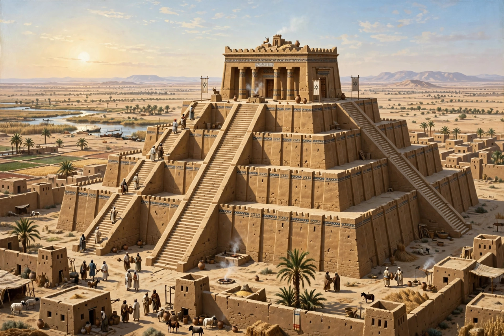

| Ziggurat | |
|---|---|
 | |
| Type | Stepped temple platform |
| Region | Ancient Mesopotamia |
| Period | c. 4100 – 500 BCE |
| Best preserved | Ziggurat of Ur; Chogha Zanbil |
A ziggurat (Akkadian ziqqurratum, from zaqārum, "to protrude, to build high") is a type of massive structure built in ancient Mesopotamia. It has the form of a terraced compound of successively receding stories or levels. Notable ziggurats include the Great Ziggurat of Ur near Nasiriyah in present-day Iraq, the Ziggurat of Aqar Quf near Baghdad, Chogha Zanbil in Khuzestan, Iran, and Sialk near Kashan, Iran.
Unlike the pyramids of Egypt, the top of a ziggurat was flat, and the stepped profile was not a tomb but a raised platform crowned by a shrine — the dwelling of a god, accessible only to priests. Ziggurats formed part of larger temple complexes that served as administrative and religious centres of Mesopotamian cities.
Raised temple platforms appear in Mesopotamia from the Ubaid period (c. 4100 BCE). The earliest ziggurats proper date to the Early Dynastic period, and the form reached its monumental peak under the Neo-Sumerian rulers of the Third Dynasty of Ur (c. 2100 BCE), when Ur-Nammu built great ziggurats at Ur, Eridu, Uruk and Nippur. The tradition continued under Babylonian and Assyrian kings for more than a millennium; the last major construction is associated with the Neo-Babylonian period in the 6th century BCE.
Ziggurats were built with a core of mudbrick and an exterior covered with baked bricks, sometimes glazed in colour. They were not places of public worship: only priests were permitted on top, charged with caring for the gods, preparing their food and maintaining the shrine. The best-preserved facade is that of the Ziggurat of Ur, whose lowest stage was restored in the 1980s; its three staircases converge on the first terrace. The largest surviving ziggurat, Chogha Zanbil, built by the Elamite king Untash-Napirisha around 1250 BCE, originally rose in five stages to about 53 metres.
The ziggurat of Babylon, Etemenanki ("temple of the foundation of heaven and earth"), dedicated to the god Marduk, is widely regarded as the model for the biblical Tower of Babel. Rebuilt by Nebuchadnezzar II, it stood in seven stages to a height of about 91 metres, according to a contemporary tablet. Alexander the Great ordered its ruined remains cleared for rebuilding, but the project died with him, and only its foundation survives.